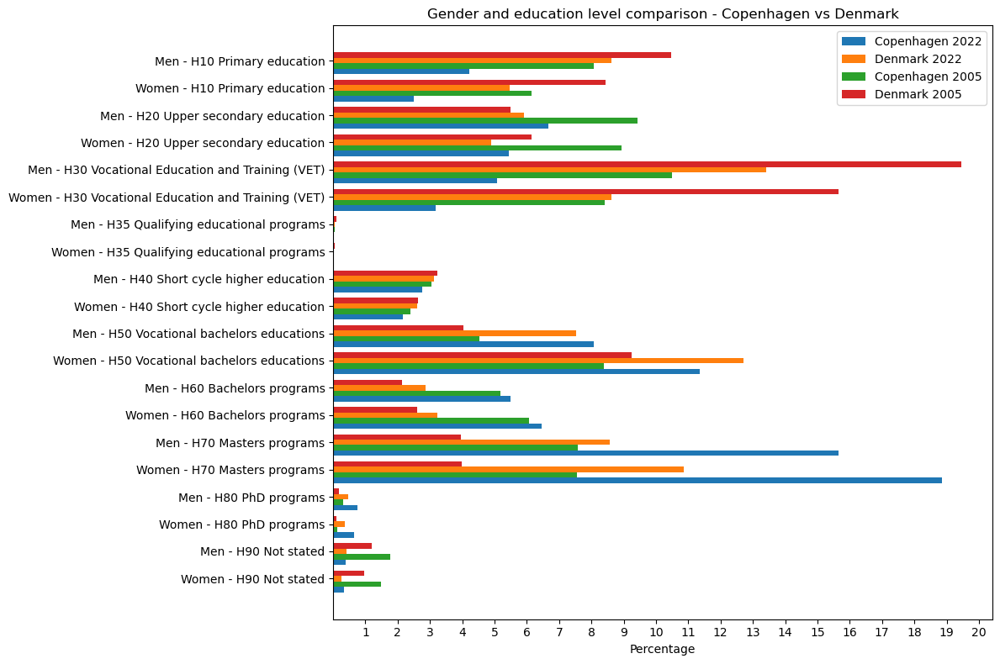

Unveiling Gender Disparities: A Tale of Copenhagen and Denmark
Our journey takes us through bustling streets and serene landscapes as we unravel the narrative of gender disparities in income, parental leave, and education. This tale is multi-faceted, touching upon income, parental leave, and education.
Link to explainer notebook
The Heart of the Matter: Income Disparities

This line chart presents a stark contrast in the income gap between genders in Copenhagen and the rest of Denmark over the years. Interestingly, the capital city appears to have a smaller income gap compared to the national average, though the gap has been slowly increasing in both areas over the years.
Next, we zoom into the districts within Denmark, examining the disparities at a more granular level.
Interactive plot of gender disparities in income in Denmark over the years
This interactive plot reveals the stark disparities between male and female income across all districts in Denmark. Notice the pronounced gap in wealthier districts like Gentofte, Hørsholm, and Rudersdal. These areas, with their high average incomes, harbor larger gender pay gaps, hinting at a trend of higher income disparities in wealthier districts.
As our analysis shows, income disparities between genders exist in Copenhagen as well as other parts of Denmark. This observation is echoed by general insights provided by Denmark.dk, which acknowledges the existence of a gender pay gap in Denmark despite the country's strong performance in gender equality.
A Geographic Perspective: Visualising Disparities Across Denmark
This map plot illustrates the income gap across various regions in Denmark from 2009 to 2021. While the gap in some regions has remained relatively stable, in others it has fluctuated, indicating that gender income disparities are widespread and vary across regions.
Parental Leave
Now we want to take a dive into parental leave in Copenhagen and compare it to other locations in Denmark. Also, we want to explore how parental leave could possibly correlate to education and income.
For all of Denmark the gap was bigger in 2021 than it was in 2015, while in Copenhagen it's the opposite. It is interesting that the gap seems to be getting bigger in all of Denmark, since over the recent years equality between genders has been a subject of many conversations.
Even though parental leave in Denmark is quite good, the rights between men and women were not the same. Before, with children born before August 2022, women received paid leave for four weeks before the birth of a child and 14 weeks after, while men received paid leave for two weeks after the birth. Then the parents split up to 32 weeks of paid leave, as provided by Denmark.dk.
Now new rules have been accepted in Denmark for parental leave that took effect in August 2022. Each parent has an earmarked 11 weeks for parental leave and these weeks cannot be shared between parents. See article on the subject by thelocal.dk.
Looking at the graph for Ishøj, it's very interesting to see how the parental leave for women is trending upwards.
Parental Leave & Education

Generally, fathers with higher levels of education tend to take longer parental leaves.
Education
From 2005 to 2022, there has been a steady increase in the number of individuals pursuing higher education among both men and women. A noteworthy observation is the widening gender gap in education, favouring women. This trend becomes especially noticeable when examining the percentages, despite the income gap favouring men.
Upon closer examination, regardless of gender, there has been an increase of individuals seeking higher levels of education in Denmark. The categories that had a decrease were "Not Stated" and "Primary Education", which is a positive indication. Every education level above "H50" has seen a rise, indicating a growing trend of people seeking higher education in Denmark.
Based on findings from Politiken, the gender disparity in higher education was less distinct four decades ago. The current situation shows a significant increase in the disparity, favouring women.
Conclusion
Our exploration of gender disparities in income, parental leave, and education in Copenhagen and Denmark has revealed important findings. We found a persistent income gap between genders, with wealthier areas exhibiting larger pay gaps. Parental leave has been a crucial contributing factor, as women have traditionally taken longer leaves. However, recent policy changes are working toward making parental leave more equal.
In education, more women than men are pursuing higher degrees — yet the income gap persists. Factors such as occupational choices, parental leave differences, and work patterns all contribute. Although progress has been made, there is still work to be done to achieve true gender equality.